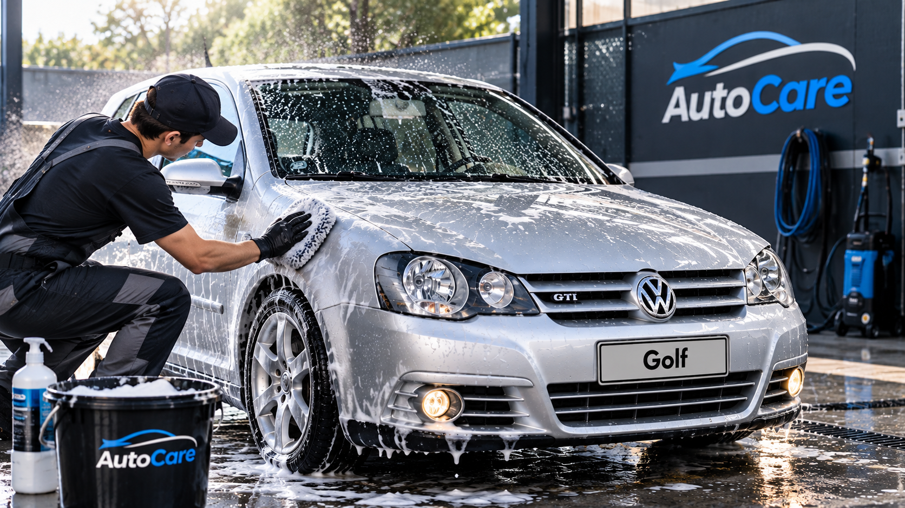

Cómo mantener tu auto limpio y protegido
Consejos básicos para conservar tu vehículo limpio y en buenas condiciones.

Mantener un automóvil limpio no solamente ayuda a mejorar su apariencia. Una limpieza frecuente también permite cuidar diferentes superficies del vehículo y evitar la acumulación de suciedad.
Comienza por una limpieza exterior
Antes de comenzar, es recomendable retirar el polvo y la suciedad más visible. Luego puedes utilizar agua y productos diseñados para la limpieza automotriz.
Utilizar paños de microfibra puede ayudar a limpiar y secar diferentes superficies sin utilizar materiales demasiado ásperos.
No olvides el interior
El interior también necesita limpieza. Puedes retirar objetos innecesarios, aspirar alfombras y asientos, y limpiar cuidadosamente las superficies interiores.
Mantener una rutina de limpieza permite evitar que se acumule demasiada suciedad y hace que las siguientes limpiezas sean mucho más sencillas.
Utiliza productos adecuados
Cada superficie puede necesitar un producto diferente. Por eso es importante revisar las indicaciones del producto antes de utilizarlo sobre pintura, plásticos, vidrios o tapicería.